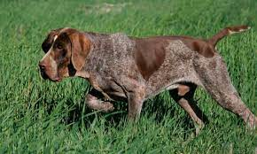

Perdiguero de Burgos
Como su nombre adelanta, el perdiguero de Burgos (o Burgos pointing dog en inglés) es una raza de perros autóctonos de la provincia de Burgos, en España, donde han sido históricamente entrenados para la cetrería y la caza menor. No obstante, a medida que las sociedades y las actividades humanas fueron evolucionando con el pasar del tiempo, estos perros perdigueros han experimentado una serie de cambios morfológicos y comportamentales. Y, en la actualidad, gracias a su carácter naturalmente tranquilo y dócil, pueden convertirse en excelentes compañeros de personas y familias con personalidades y estilos de vida muy diversos.
ORIGEN: Europa España
TAMAÑO: Grande
Peso adulto: 25-25kg
Esperanza de vida: 12-14 años

SHIH TZU
El shih tzu es una de las razas de perros de compañía más sociables y juguetones. Eso sumado a su hermoso pelaje y dulce apariencia explican el porqué es una de las razas preferidas actualmente. Estos tipos de perros son muy cariñosos e inteligentes y necesitan una atención constante por parte de sus dueños, así que no están recomendados para vivir fuera de las casas o para dejarlos mucho tiempo solos.
ORIGEN: ASIA CHINA
TAMAÑO: Pequeño
Peso adulto: 3.10kg
Esperanza de vida: 12-14 años
Leonberger
El leonberger es una antigua raza canina originada en Alemania, donde ha sido históricamente entrenada para cumplir funciones de vigilancia y protección. No obstante, su temperamento sereno y particularmente amable con los niños han impulsado su popularidad como perro familiar más allá de su país natal y, hoy en día, podemos encontrar ejemplares de esta raza en todos los continentes.
Si estás interesado en adoptar a un peludo de esta raza, o sencillamente te gusta explorar el universo canino, sigue leyendo esta ficha de ExpertoAnimal y descubre mucho más sobre las características del leonberger, su comportamiento, cómo debe ser la educación y los cuidados que necesita para disfrutar de una buena calidad de vida.
ORIGEN: EUROPA ALEMANIA
TAMAÑO: GIGANTE
Peso adulto: 45-100KG
Esperanza de vida: 70-80 años
Beagle
Dentro de los perros de raza, nos encontramos con el sorprendente beagle o beagle inglés, que llama la atención por su parecido físico con el foxhound. Aun así, este ejemplar es mucho más pequeño en cuanto a tamaño pero cuenta con unas orejas más largas. Aun así, todas las características del beagle lo hacen un perro espectacular e único. Si quieres conocer más sobre el perro beagle, sus características, cuidados y salud, además de dónde poder adoptar uno y cómo es su carácter, sigue leyendo la siguiente ficha de ExpertoAnimal que te presentamos.
ORIGEN: EUROPA REINO UNIDO
TAMAÑO: PEQUEÑO
Peso adulto: 10-25KG
Esperanza de vida: 12-14 años